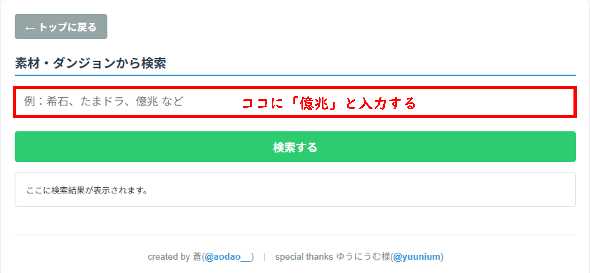
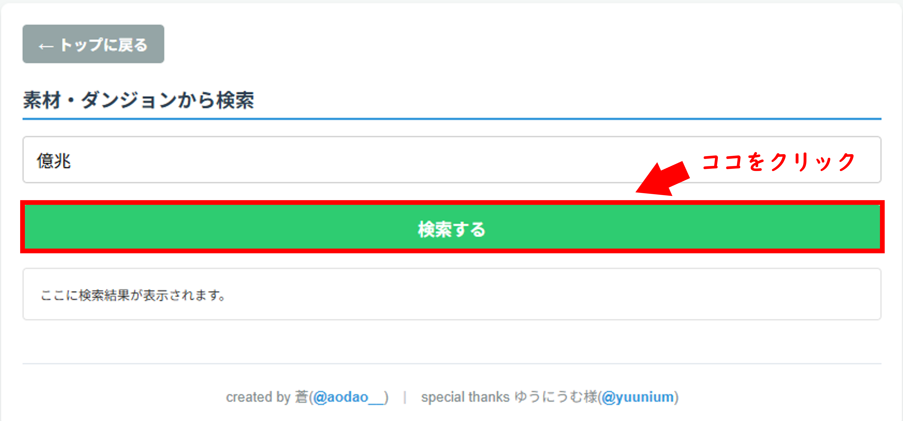
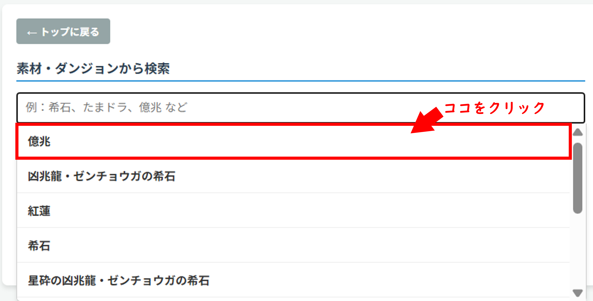
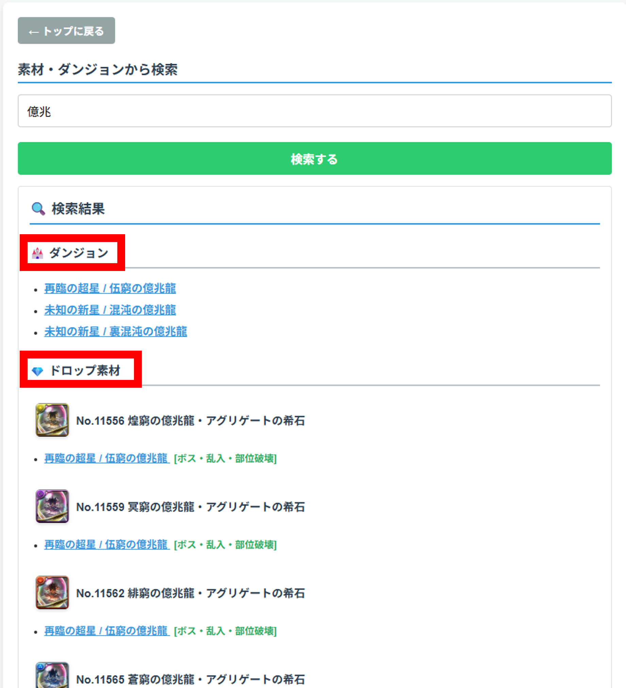
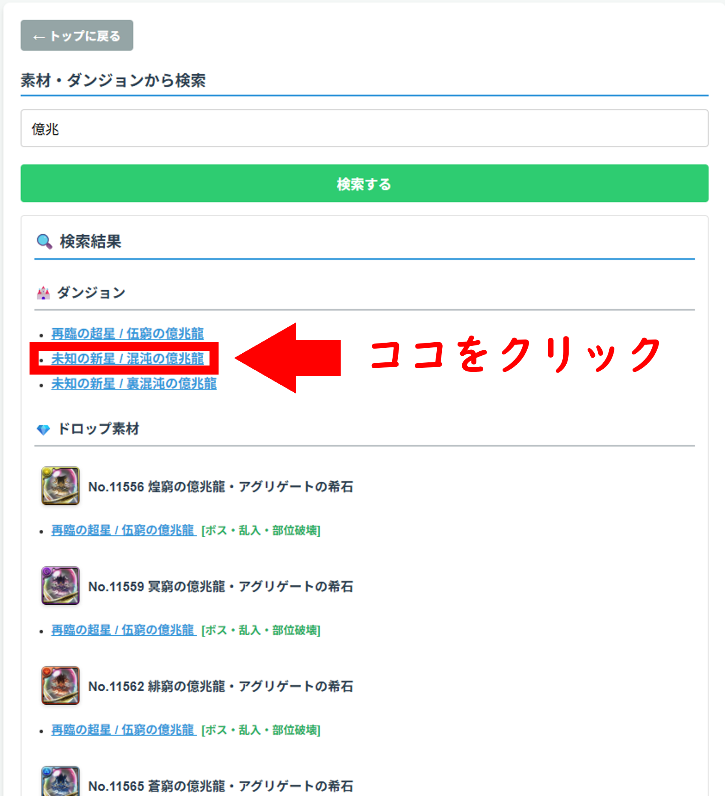
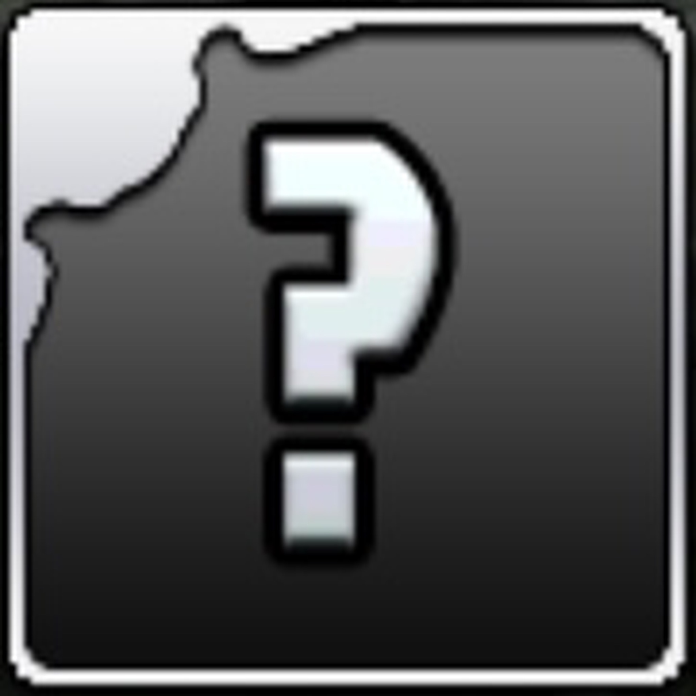

🛠 ただいまメンテナンス中です
【メンテナンス予定期間】
未定
【メンテナンス予定期間】
未定
トップ画面の「素材・ダンジョン検索」から、探したいアイテム名やダンジョン名を入力して検索できます。
例として、ダンジョン「未知の新星 / 混沌の億兆龍」を「億兆」というワードで検索する。
検索ボックスに「億兆」と入力する。

入力の際、検索履歴から楽に入力を済ませれます。

入力を終えたら、検索ボタンを押す。Enter(改行)でも検索できます。

「🏰 ダンジョン」には、「混沌の億兆龍」や「裏混沌の億兆龍」など4種類のダンジョンが表示されています。一方、「💎 ドロップ素材」には、「煌窮の億兆龍・アグリゲート」などの素材が表示されます。

青文字で記されている「未知の新星 / 混沌の億兆龍」をクリックすると、該当ダンジョンの報酬リストに飛ぶことができます。

トップ画面の「報酬リスト」から、すべての闘技場シリーズのドロップ報酬を一覧で確認できます。

【表示されるアイコンや条件の例】
・スタミナ / バトル数：挑戦に必要なスタミナと階層です。
・陽加護 / 陰加護アイコン：ダンジョンに付与されている属性補正です。
・【超重力】 / 【超高度】：ダンジョン特有の制限効果です（文字にカーソルやタップを合わせると詳細な倍率が見られます）。
・ボス・乱入・部位破壊：ボスの本体やパーツがどこでドロップするかを記載しています。
この報酬一覧は、私自身でSNSや自分のスクショを基に作成しています。見落としも含めて、必ず正しいとは言えません。あくまでも目安として受け取っておいてください。
各ダンジョンを初クリアすると、MP50,000ptを獲得できる。また、1つの闘技場シリーズを初踏破するたびに魔法石25+1個を獲得できる(∞級1人専用コロシアムと極限降臨ラッシュを除く)
大樹の霊王を例とすると、
①ボス・部位破壊
ボス本体では、『宿木の大樹霊王・アドネアの希石』、ボス部位では『宿木の大樹霊王・アドネアの左根の希石』と『宿木の大樹霊王・アドネアの右根の希石』、乱入部位では『神器に宿る者・グラオルの希石』をドロップする。
②確定ドロップ
『潜在たまドラ☆枠解放』を "確定で" 1体ドロップする。
③確率ドロップ
『ゴールドたまドラ』を "一定確率で" 1体ドロップする。
④ランダムドロップ
『創装の宝玉』、『ダイヤドラゴンフルーツ』、『古代の三神面』の中からランダムで8個 "確定で" ドロップする